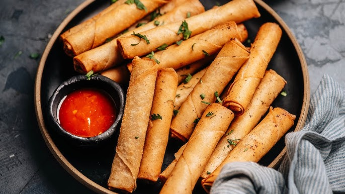

Tatak Pinoy
Lumpiang Shanghai
Filipino-style fried spring rolls filled with ground pork, carrots, and seasonings.
Ingredients
- Ground pork
- Carrots
- Onion
- Garlic
- Spring Roll Wrappers
- Egg
- Salt
- Pepper
- Oil
Cooking Procedure
- Mix pork, vegetables, and seasonings.
- Wrap into rolls.
- Fry until golden brown.